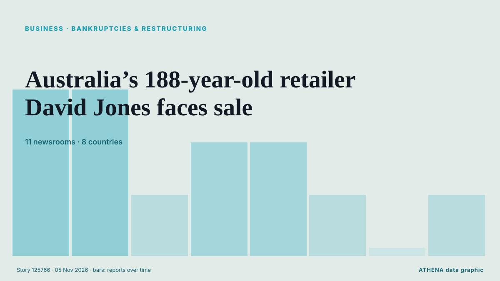

Business, Companies & Investment
SponsoredPresented by  Cybernetics and Artificial Intelligence Lab Welcome to the Cybernetics and Artificial Intelligence Laboratory, established at the Department of Business Administration of the National and Kapodistrian University of Athens. The lab is headed by Professor Dimitrios Thomakos. The lab aims to do research that can be published in top venues. Our research uses tools and methods of Artificial Intelligence, and lies in the following areas: - Forecasting - Decision making - Cyber security - Finance We are always looking forward to collaborating with exceptional students!
Cybernetics and Artificial Intelligence Lab Welcome to the Cybernetics and Artificial Intelligence Laboratory, established at the Department of Business Administration of the National and Kapodistrian University of Athens. The lab is headed by Professor Dimitrios Thomakos. The lab aims to do research that can be published in top venues. Our research uses tools and methods of Artificial Intelligence, and lies in the following areas: - Forecasting - Decision making - Cyber security - Finance We are always looking forward to collaborating with exceptional students!

Bankruptcies & restructuringAustralia’s 188-year-old retailer David Jones faces sale
The department store was placed into voluntary administration as rising costs, sluggish retail sales and supply chain pressures weighed on its business. from Free Malaysia Today
| 23 Oct | 67 |
|---|---|
| 24 Oct | 40 |
| 25 Oct | 37 |
| 26 Oct | 95 |
| 27 Oct | 96 |
| 28 Oct | 93 |
| 29 Oct | 105 |
| 30 Oct | 92 |
| 31 Oct | 27 |
| 1 Nov | 33 |
| 2 Nov | 114 |
| 3 Nov | 101 |
| 4 Nov | 76 |
| 5 Nov | 2 |
3M Commits $7.35 Billion to Settle PFAS-Related Claims
3M Co. is committing $7.35 billion over nine years to settle litigation related to its use of chemicals known as PFAS. from Insurance Journal
CVS Health to split pharmacy chain from health insurance
CVS Pharmacy will be separate from CVS Health, housing major insurer Aetna and benefits manager Caremark CVS Health, the largest US healthcare conglomerate valued at $117bn, has announced its plans… from The Guardian
GXO reports stronger growth as logistics contract wins accelerate
GXO Logistics reported higher revenue and net income for the third quarter of 2026, supported by stronger organic growth and an increase in new business contracts. from Container News
Democratic takeover of US Congress: What happens next
Buoyed by victories in traditional Republican strongholds, Democrats pledged swift action on living costs and the Iran war, while prioritising investigations into alleged abuses and corruption. from Free Malaysia Today
Canva announces layoffs, job changes for about 22% of workforce
The revamp leaves the company in a delicate financial balance. from The Business Times
Google extends voluntary buyout offers to employees in several countries amid heavy AI spending
It has offered such packages to staff in Canada, France, Germany, Japan and Switzerland. from The Business Times
Culture Secretary formally intervenes in Sky’s £1.6bn ITV deal
Lisa Nandy will bring forward streaming legislation to allow a new public interest consideration covering broadcasting of on-demand programmes. from The Irish News (Belfast)
Revolut reaches $115 billion valuation after latest fundraising
Revolut has completed its latest fundraising process, reaching a $115 billion valuation, the fintech company announced on Wednesday, as it continues expanding its banking operations across… from Cyprus Mail
Ukraine, EU enlargement and energy to top agenda of Visegrad Four summit
Ukraine, European Union enlargement and energy will be the main topics of the Visegrad Four summit, which will be held in Trenčín, Slovakia, on November 4-5. from Ukrinform (English)
German auto supplier Schaeffler to cut 3,460 jobs in Europe amid automotive crisis
Restructuring targets net reduction of 2,660 positions in Germany and 800 across rest of Europe by 2028. from Anadolu Agency (English)
Emaar Properties offers Dh15-per-share cash in Emaar Development buyout
Dubai: Emaar Properties has announced plans to acquire the remaining shares in Emaar Development for Dh15 apiece in cash, confirming an earlier Bloomberg report that the Dubai-based property group… from Gulf News
Piraeus Port Authority nine-month profit falls 21.5%
Piraeus, Greece (Ports Europe) November 4, 2026 – Piraeus Port Authority (PPA) reported a 21.5% fall in nine-month profit to €59.7 million, but container throughput at Pier I grew in the third… from Ports Europe
Aramco acquires 49% stake in Saudi Arabia's Humain
RIYADH: Saudi Aramco has completed its acquisition of a 49 percent stake in artificial intelligence company Humain, formalising an agreement first announced in October 2025, in a transaction… from Arab News
German automaker giant BMW's operating profit falls to lowest level since 2020
Munich-based automaker's operating profit falls by 35.2% in 1st 9 months of 2026. from Anadolu Agency (English)
Rail Rivalry: Schneider’s Bold Move to Norfolk Southern from CSX
Schneider is making a monumental shift in its intermodal operations, moving all eastern rail business from CSX to Norfolk Southern. from FreightWaves
Google to pour US$15bil into Malaysia's digital future
KUALA LUMPUR: Google will invest US$15 billion in Malaysia between 2027 and 2028 to develop digital infrastructure, including data centre campuses in industrial zones, and expand clean energy… from New Straits Times
Klobuchar notches win in Minnesota governor's race
Amy Klobuchar will replace outgoing Governor Tim Walz, the 2024 Democratic vice presidential nominee, who ended his bid for a third term after the long-simmering fraud investigation exploded into a… from NDTV
South Korean TV Drama Industry Seeks $746 Million in Support as Output Declines
Danantara prepares project pipeline for US talks ahead of G20
Indonesia’s sovereign wealth fund, the Danantara Investment Management Agency, is finalizing a portfolio of ... from Antara (English)
Libya's top religious authority rules against wearing Nike clothes
The US company was named after the Greek goddess of victory, so the Dar al-Ifta said displaying its logo was unIslamic. from BBC News
StormGeo acquires Portchain to accelerate Just-in-Time voyage optimisation at scale
StormGeo’s acquisition of software provider Portchain adds port call coordination to StormGeo’s Voyage Intelligence platform. from Ship.Energy
Von der Leyen: Hormuz closure cost Europe €127 billion
European Commission president's remarks come after the US struck Iran’s Qeshm Island on Monday night. from Euractiv
Apple FYQ4 Revenue Tops Forecasts On iPhone Sales As New CEO John Ternus Steps Up
Apple revenue beat Wall Street forecasts rising 12% for the fiscal fourth quarter ended in September, led by strong iPhone sales. from Deadline
Nexperia sues Wingtech and its founder, demanding compensation for damages
Nexperia has launched legal action against its Chinese parent company, Wingtech Technology, demanding more than $2 billion in compensation, according to Wingtech. from NL Times
Palantir nearly doubles 3Q26 revenue, riding wave of commercial demand
Palantir reported third-quarter 2026 revenue results that nearly doubled from the previous year. from DigiTimes Asia
Hinge is making a surprising change to its subscriptions. Here’s who stands to benefit
Hinge users may soon have access to a more affordable subscription tier. from Fast Company
Aramco’s Q3 profit jumps 34.5% to $36.3bn
RIYADH: Saudi Aramco’s net profit rose 34.5 percent year on year to $36.3 billion in the third quarter, boosted by higher revenue and a gain from the sale of its stake in Malaysian refining and… from Arab News
Seven Arrested in International Operation Targeting Investment Fraud
Authorities from seven countries seized more than 100 servers and arrested seven suspects of investment fraud that may have costed victims in at least 50 countries more than $4.6 million. from OCCRP
Bahrain announces $3.89bn investment as AirAsia, DHL and Meliá unveil major projects
Bahrain announces $3.89bn in investment across four Golden Licence projects involving AirAsia, DHL, Meliá and a new technology hub. from Arabian Business
Retailer Zalando launches AI shopping agent as margins squeezed
Zalando beat sales expectations in the third quarter and introduced its first AI-powered shopping tool, but investors focused on weaker margins. from The Next Web
Hypersonic missile being made by British-German startup ‘could strike deep inside Russia’
It comes as part of a UK-German defense parnership signed by former defence secretary John Healey in 2024. from The Independent
Tanzania eyes global energy conquest using 2026 ADIPEC to lure foreign capital
ABU DHABI: TANZANIA is positioning itself to tap into global investment opportunities in the energy sector by attracting both domestic and foreign capital, Energy Minister Dr Juma Homera has said. from Daily News
Blackstone’s Gray sees more AI equity fundraising ahead from major tech firms
Gray’s comments reinforce a theme running through this week’s news flow: the AI buildout is increasingly being financed by issuing shares, not just from cash flow and debt. from investingLive (ForexLive)